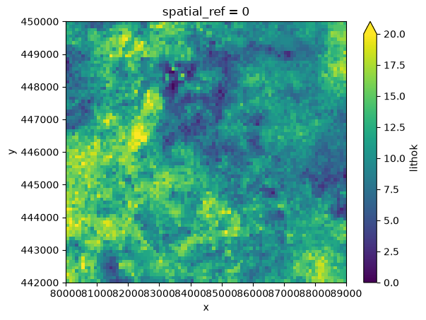
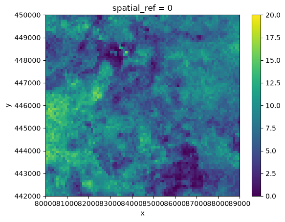
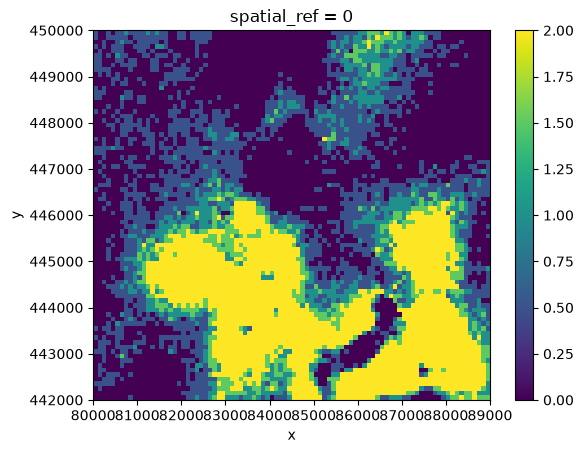

Creating thickness maps from GeoTOP#
In this example, we will retrieve GeoTOP from the OpenDAP server for an area around Delft and visualize the thickness of several geologic criteria to gain a quick insight into how the subsurface in this area is built up.
First, we import GeoST and load the GeoTOP data for the area around Delft.
import geost
geotop = geost.read_geotop_from_opendap(bbox=(80_000, 442_000, 89_000, 450_000))
print(geotop)
<xarray.Dataset> Size: 117MB
Dimensions: (y: 80, x: 90, z: 313)
Coordinates:
* y (y) float64 640B 4.42e+05 4.422e+05 ... 4.498e+05 4.5e+05
* x (x) float64 720B 8.005e+04 8.015e+04 ... 8.885e+04 8.895e+04
* z (z) float32 1kB -49.75 -49.25 -48.75 ... 105.2 105.8 106.2
spatial_ref int64 8B 0
Data variables: (12/13)
strat (y, x, z) float32 9MB dask.array<chunksize=(65, 36, 313), meta=np.ndarray>
lithok (y, x, z) float32 9MB dask.array<chunksize=(65, 36, 313), meta=np.ndarray>
kans_1 (y, x, z) float32 9MB dask.array<chunksize=(65, 36, 313), meta=np.ndarray>
kans_2 (y, x, z) float32 9MB dask.array<chunksize=(65, 36, 313), meta=np.ndarray>
kans_3 (y, x, z) float32 9MB dask.array<chunksize=(65, 36, 313), meta=np.ndarray>
kans_4 (y, x, z) float32 9MB dask.array<chunksize=(65, 36, 313), meta=np.ndarray>
... ...
kans_6 (y, x, z) float32 9MB dask.array<chunksize=(65, 36, 313), meta=np.ndarray>
kans_7 (y, x, z) float32 9MB dask.array<chunksize=(65, 36, 313), meta=np.ndarray>
kans_8 (y, x, z) float32 9MB dask.array<chunksize=(65, 36, 313), meta=np.ndarray>
kans_9 (y, x, z) float32 9MB dask.array<chunksize=(65, 36, 313), meta=np.ndarray>
onz_lk (y, x, z) float32 9MB dask.array<chunksize=(65, 36, 313), meta=np.ndarray>
onz_ls (y, x, z) float32 9MB dask.array<chunksize=(65, 36, 313), meta=np.ndarray>
Attributes:
title: geotop v01r6s1 (100.0m * 100.0m * 0.5m
references: http://www.dinoloket.nl/detaillering-van-de-bovenste-lagen...
comment: GeoTOP 1.6.1 (lithoklasse)
disclaimer: http://www.dinoloket.nl
terms_of_use: http://www.dinoloket.nl
institution: TNO / Geologische Dienst Nederland
Conventions: CF-1.4
source: Generated by nl.tno.dino.geo3dmodel.generator.GeoTOPVoxelM...
history: Generated on Thu May 01 22:54:36 CEST 2025
As you can see, the data is an xarray.Dataset containing all the model variables of GeoTOP. With GeoST’s Xarray extension, we can use the get_thickness method to retrieve thickness maps based on different criteria.
First, we would like to determine the total thickness of clay layers in the area. Let’s load the lithological metadata for GeoTOP and check the encodings for the different lithologies.
lithok_codes = geost.bro.geotop_lithok_units()
lithok_codes
Downloading file 'geotop_v01r6s1_metadata_lithok.parquet' from 'https://github.com/Deltares-research/geost/raw/main/data/geotop_v01r6s1_metadata_lithok.parquet' to '/home/runner/.cache/geost'.
| LITHO_CLASS_CD | DESCRIPTION | SEQ_NR | RED_DEC | GREEN_DEC | BLUE_DEC | |
|---|---|---|---|---|---|---|
| VOXEL_NR | ||||||
| 0 | a | antropogeen | 0 | 200 | 200 | 200 |
| 1 | v | organisch materiaal (veen) | 1 | 157 | 78 | 64 |
| 2 | k | klei | 2 | 0 | 146 | 0 |
| 3 | kz | kleiig zand, zandige klei en leem | 3 | 194 | 207 | 92 |
| 5 | zf | zand fijn | 5 | 255 | 255 | 0 |
| 6 | zm | zand midden | 6 | 243 | 225 | 6 |
| 7 | zg | zand grof | 7 | 231 | 195 | 22 |
| 8 | g | grind | 8 | 216 | 163 | 32 |
| 9 | she | schelpen | 9 | 95 | 95 | 255 |
We can derive a thickness map of clay by selecting the "k" lithology and plotting the result.
thickness_clay = geotop.gst.get_thickness(lithok_codes.select_unit("k"))
thickness_clay.plot.imshow(
x="x", vmin=0, vmax=20
) # Make sure to set the x-axis for proper visualization
<matplotlib.image.AxesImage at 0x7add0425f8c0>

This shows the total thickness of all clay layers combined in the GeoTOP model. However, we may only be interested in Holocene clay layers. In that case, we need to add this condition to refine the selection.
Let’s load the stratigraphic metadata as well and add the Holocene stratigraphy to the condition. We can do this by selecting all Holocene units with the get_holocene_units method and combining this with the selection from lithok_codes using the logical & operator.
strat_units = geost.bro.geotop_strat_units()
thickness_clay_holocene = geotop.gst.get_thickness(
strat_units.get_holocene_units() & lithok_codes.select_unit("k")
)
thickness_clay_holocene.plot.imshow(x="x", vmin=0, vmax=20)
<matplotlib.image.AxesImage at 0x7adcf4f51090>

As you can see, GeotopUnits instances can be used as conditions in methods such as get_thickness. It is also possible to use the logical & (and) and | (or) operators to combine selections and create the desired condition.
A condition can also be created by combining a GeotopUnits selection with a boolean DataArray. For example, we can determine the thickness of the Dutch basal peat unit ("NUNIBA"), but only where the probability of voxels containing organic material is higher than 0.8.
thickness_basal_peat = geotop.gst.get_thickness(
strat_units.select_unit("NUNIBA") & (geotop["kans_1"] > 0.8)
)
thickness_basal_peat.plot.imshow(x="x")
<matplotlib.image.AxesImage at 0x7adcf4fe3ed0>

Note
The boolean DataArray must be placed last when combined with a GeotopUnits instance. Otherwise, a TypeError is raised.
Since the results are xarray.DataArray objects, we can export them as GeoTIFFs using Rioxarray. This makes it easy to share the results and view them in GIS software. For example, let’s export the Basal peat thickness result to a GeoTIFF.
thickness_basal_peat.rio.to_raster("thickness_basal_peat.tif")